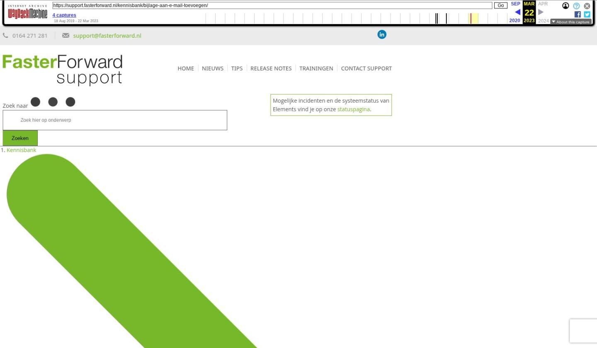

Bijlage aan een e-mail toevoegen en verwijderen

Tekstinhoud
Bijlage aan een e-mail toevoegen
Wil je een bestand (zoals een foto) of een document (zoals een .docx of .pdf) meesturen met een e-mail? Dan voeg je deze toe als bijlage. Het is hierbij ook mogelijk om deze bijlage gelijk aan een dossier toe te voegen, of om juist een bijlage vanuit het dossier toe te voegen aan een e-mail.
Bijlage toevoegen
Bijlagen koppelen aan het dossier
Bijlagen vanuit dossier toevoegen aan een e-mail
Bijlage aan een ander dossier toevoegen
Bijlagen koppelen aan dossier wanneer je niet vanuit het dossier mailt
Bijlage toevoegen
Je kunt een bijlage toevoegen via het blok 'sleep hier uw bestanden (of klik)'. Je kunt de bestanden slepen naar het veld. Je kan ook op het veld klikken en de bijlage vervolgens selecteren op je computer.
Let op: een te verzenden e-mail mag maximaal 25MB zijn, dit is inclusief bijlage. Een e-mail bevat echter altijd meer data dan alleen de bijlage. Houd daar dus rekening mee bij het opstellen van een e-mail.
Bijlagen koppelen aan het dossier
Wanneer je een e-mail met bijlagen verstuurt, kun je deze bijlagen direct koppelen aan het dossier. Het document is dan altijd terug te vinden in het dossier onder het tabblad 'Documenten'.
Vink hiervoor het selectievakje onder het 'bijlagenveld' aan.
Bijlagen vanuit dossier toevoegen aan een e-mail
Als een document al in een dossier staat, hoe je deze niet te downloaden en opnieuw toe te voegen. Bijlage(n) vanuit het dossier toevoegen, doe je eenvoudig met de knop 'Documenten uit dossier toevoegen'.
Vink in het onderstaande scherm de bijlage aan en kies de juiste map, categoriegroep, categorie, de omschrijving en eventueel het product.
Bijlage aan een ander dossier toevoegen
Het kan zijn dat je een bijlage uit een verstuurd e-mail uit een ander dossier wilt koppelen aan een nieuwe e-mail. Dat is mogelijk door deze bijlage aan het klembord toe te voegen. Open de reeds verstuurde e-mail en klik achter de bijlage op het icoontje 'aan e-mail klembord toevoegen'.
Wanneer deze is toegevoegd verschijnt rechts bovenin bij de paperclip een nummer dat het aantal items weergeeft dat nog op het klemborg staat.
Middels de knop 'Plak vanuit klembord' wordt deze bijlage aan de e-mail toegevoegd.
Bijlagen koppelen aan dossier wanneer je niet vanuit het dossier mailt
Je kunt de bijlage(n) ook koppelen aan een dossier, wanneer je niet vanuit het dossier gemaild hebt. Klik hiervoor op de knop 'Koppel alle bijlagen' in een e-mail.
Vink vervolgens de gewenste selectievakjes aan om de e-mail te koppelen.
Laatste update: 31 augustus 2022
Tagged: e-mail, email, mail
Was deze informatie nuttig?
Ja Nee